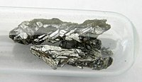

Numero atomico: 33
Massa atomica: 74,92
Temperatura di fusione (°C): 817
Temperatura di ebolizione (°C): --
Energia di prima ionizzazione (kj/mol): 947
Elettronegatività (secondo Pauling): 2,18
Densità: 5,73
Numeri di ossidazione: ±3+5
Configurazione elettronica: 1s2, 2s2, 2p6, 3s2, 3p6, 3d10, 4s2, 4p3
Maggiori Informazioni